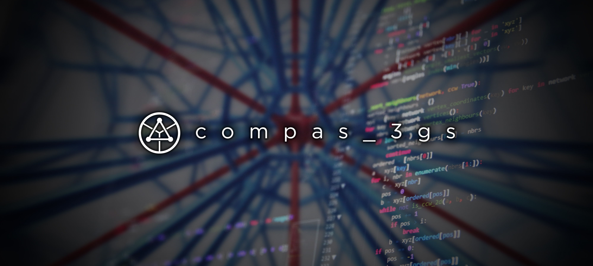

Introduction
{kind=link}
About
compas_3gs is a 3D graphic statics add-on package for the COMPAS framework.
Graphic statics is a graphical method of analysis and design of structures using reciprocal form and force diagrams. Computational graphic statics is a powerful design tool that automates the drawing process of the reciprocal diagrams. It also enables dynamic interaction and bi-directional control of both the geometry of form and internal forces of a structure, while providing a real-time, visual feedback.
In 2D graphic statics, the planar equilibrium of forces at a node of a structure is represented by a closed force polygon. In 3D graphic statics, the spatial equilibrium of forces at a node of a structure is represented by a closed force polyhedron. As structures become more complex, so does the topology and geometry of its force polyhedra. Conventional CAD tools are limited in its functions and visualisation methods to allow sufficient handling and modelling of polyhedral geometries.
The compas_3gs package provides the necessary datastructures, functionalities, algorithms and visualisation tools for a wide range of 3D graphic statics applications.
Using the network, mesh and volmesh datastructures, this packages aids the user in setting up and initialising polyhedral reciprocal diagrams.
Various algorithms allow precise control and transformation of the polyhedral form and force diagrams.
Most importantly, the legibility and usability of the polyhedral reciprocal diagrams are maximised through various visualisation functionalities to provide the user with new design insights, which is one of the most rewarding inherent benefits of graphic statics.
General approach
The functionalities and algorithms of compas_3gs are mainly based on transparent, geometry-based solvers and optimisation techniques as opposed to “black-box,” numerical methods.
compas_3gs is developed with the following goals in mind:
1. Flexibility
The implementation needs to be general and flexible enough to cover a wide range of both known and unknown structural typologies. It also needs to have as few software dependencies as possible, so that users from a variety of backgrounds and expertise can adapt the library for various applications regardless of the CAD software being used.
2. Simplicity
In computational geometry, improvement of the computational efficiency of solving procedures and algorithms are often prioritised over the user’s ability to modify and interact with the resulting solutions. Instead of focusing on computing the absolute solution in the shortest amount of time possible, the solution as well as the procedure should communicate complex information in simple ways that are easy to understand and potentially provide meaningful insights.
3. Customisability
During early stages of design, it may be desirable to explore multiple feasible solutions as rapidly as possible while meeting the requirements that are specific to the design problem at hand. This requires a set of flexible yet robust functions and operations, which can be easily mix-and-matched to create customised toolbars and workflows that are tailored for the needs of the user.
4. Open source
compas_3gs is developed as an open-source library, encouraging researchers from a wide range of disciplines and expertise to make contributions that all users can benefit from.
In order to incentivise the researchers to contribute their work, each contribution to compas_3gs will be treated like a publication which can be cited and referenced.